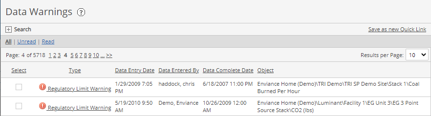
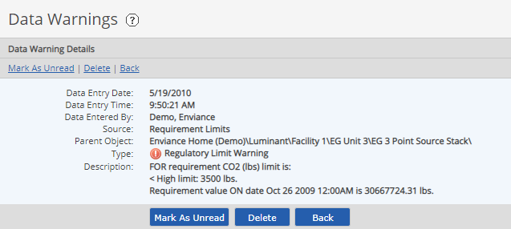

Data warnings are automatically generated by the system. There are three types of data warnings:
The Data Warnings section on the Messages page shows the data warnings for all the system objects for which you have View Data permission. An abbreviated list of current data warnings may also appear in the Data Warnings panel on your Desktop (or other dashboard).
You may receive also receive data warnings via email if email data warning notifications are configured.
To view data warnings:
Select Data Warnings from the Messages page.
Current data warnings are displayed. You an sort by any column by selecting the column head.
You can filter the messages by status using the status links (All | Unread | Read) at the top of the page.
Use the Search pane to search messages by type, source or dates.
To read a warning message, click the link in the Type column.

The details include the requirement that generated the warning, the parent object for the requirement, date, and a description.

To change the Read/Unread status of messages, right-click the message in the Inbox list and choose Change Read Status.
To delete messages, select one or more messages, right click and choose Delete.
You must have administrative rights to delete a data warning. If you delete a data warning, it will no longer be seen by any users.